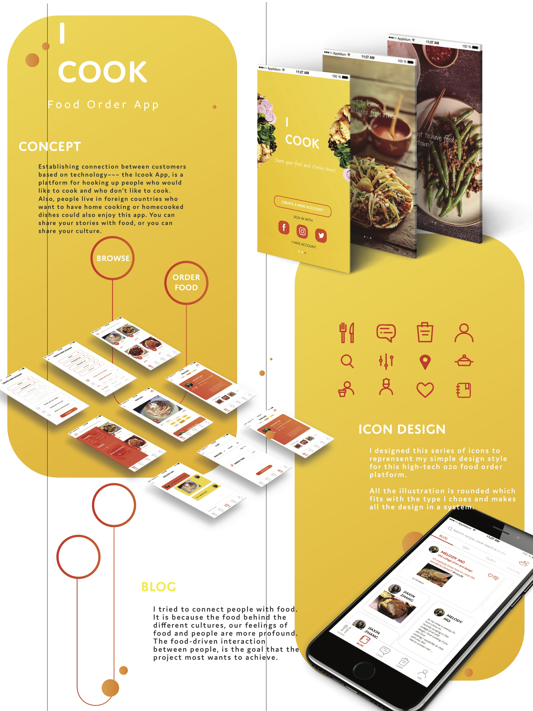
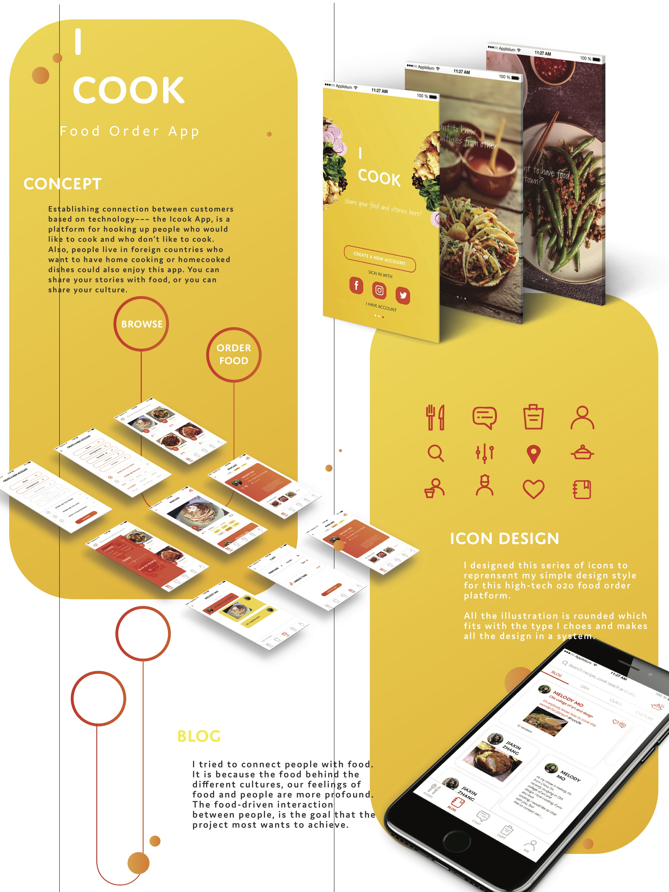

ICOOK app
UI & UX
When technology became part of our life, interaction between people in restaurant is distant, people have shorter attention spans because of their constant use of digital technology. My focus was on how to design a platform connecting individuals out of digital world. Technology should be a vehicle to help people improving communication between each other rather than making people become alienated. In order to achieve this goal, I designed an app named ICOOK targeting people living aboard in order to establish connection between customers based on technology. It’s a platform helping people who would like to cook and who don’t like to cook get together. Also, people live in foreigner countries who want to have home cooking or hometown dishes can use this app finding a friend from their country.
The name ‘ICOOK’ is the words from people who like cooking. It shows the concept of the app that some customers would like to cook for other customers who connected by ICOOK app. Also, ‘I’ shares the same pronunciation with Chinese ‘爱’ which means love, therefore in Chinese it can also mean that I love cooking (I cook=爱做菜).